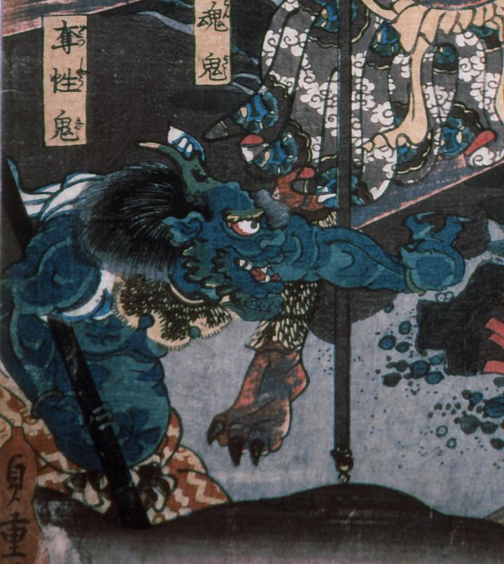

鬼；オニ

緑色の鬼。右手に金棒を持ち、左手は前方へ突き出している。頭には角が生え、口元には鋭い牙もみえる。虎皮の襟巻きをつけ、襷掛けである。
著作者：歌川貞重／出典：親書誌：A5_hermitage_0001：（賽の河原；サイノカワラ）／日付：2011／資源識別子：A5_hermitage_0001_0001_0000
Copyright (c)2010- International Research Center for Japanese Studies, Kyoto, Japan. All rights reserved.